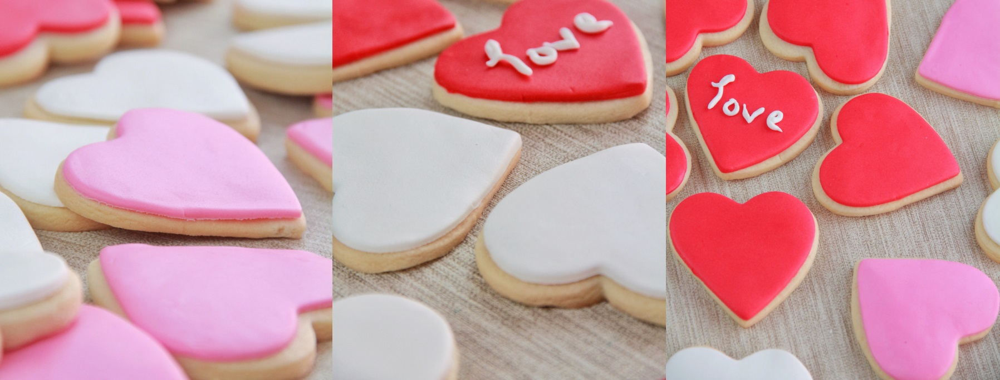

Sevgililer günü başta olmak üzere tüm özel günlerde sevdiklerinizle
beraber kaliteli vakit geçirirken zevkle tüketebileceğiniz
bu özel ve güzel tarifi sizlerle paylaşmaktan mutluluk duyuyorum.
Yapımı oldukça kolay ve lezzetine diyecek söz yok. Şimdiden Afiyet Olsun
8-10 Kişiliktir. 5dk Hazırlık Süresi. 15dk Pişirme Süresi.
Gerekli Malzemeler
- 200 gr oda ısısında tereyağ
- 200 gr pudra şekeri
- 1 yumurta
- 3-3, 5 su bardağı un
- Şeker hamuru
Nasıl Yapılır?
- Tereyağı mikserle çırpıyoruz.
- yumurtayı ve pudra şekerini ekleyip çırpmaya devam ediyoruz.
- Unu kontrollü ekleyip yoğuruyoruz.
- İki yağlı kağıt arasına alıp merdane ile açıyoruz.
- Tepsiye diziyoruz.
- 180 derece ısıtılmış fırında 12-15 kontrollü pişiriyoruz.
- Soğuyunca üzerinin şeker hamuru ile veya istediğiniz gibi süsleyebilirsiniz.
Afiyet olsun
